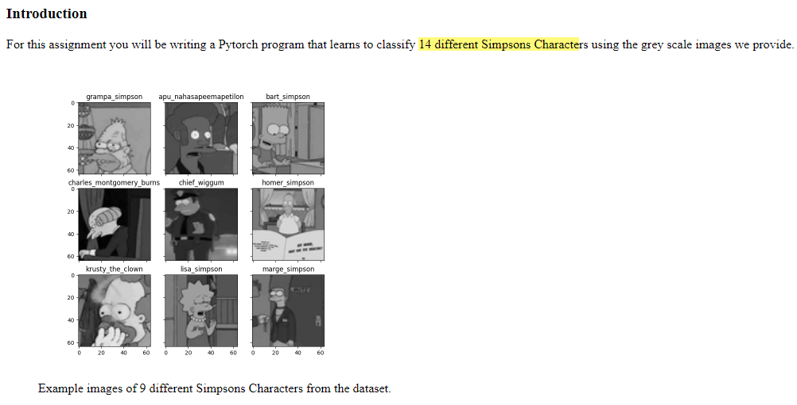

Image classification#

Implementation#
"""
student.py
UNSW COMP9444 Neural Networks and Deep Learning
You may modify this file however you wish, including creating additional
variables, functions, classes, etc., so long as your code runs with the
hw2main.py file unmodified, and you are only using the approved packages.
You have been given some default values for the variables train_val_split,
batch_size as well as the transform function.
You are encouraged to modify these to improve the performance of your model.
The variable device may be used to refer to the CPU/GPU being used by PyTorch.
You may change this variable in the config.py file.
"""
import torch
import torch.nn as nn
import torch.nn.functional as F
import torch.optim as optim
import torchvision
import torchvision.transforms as transforms
from math import ceil
import math
'''
Below is a slightly modified version of the implementation of Wide ResNet: https://github.com/meliketoy/wide-resnet.pytorch
BELOW COMMENT on the network architecture is based on the original paper - Wide Residual Network
the reference e.g. [1] is also refering to the paper's reference
'''
"""
Answer to Question:
Briefly describe how your program works, and explain any design and training
decisions you made along the way.
Task is to classify 14 different Simpsons Characters .
Firstly, EDA:
image is in grayscale, and 64*64
the distribution of classes is ploted via bar plot and is found to be a unbalanced dataset (523~2146).
Pre-processing/transformation
Initial data augmentation includes random perspective, random crop, Random Horizontal Flip and grayscale.
It is realised the model would overfit and so more transforms ()
are added, however, the original model is then not able to learnt, and it is found the model needs to be a lot complex in order to learn this extra transform dataset.
Since both models give similar result (mention below), so the simpler model is chosen and so only 3 transforms are added.
The importance of certain transformation is determined by a model that is trained with 95% accuracy, if the new transformation decreases the accuracy within 10%, it is then accepted, however, it is found that most transformation is not needed for this dataset.
Model selection
wide resnet 16 ,w = 5 - 95% - 20MB
efficientnetv2 - 95% - 42MB
resnet50 - 93% - 40 MB
vision transformer or the hybrid variant is not considered since the dataset is small and comparison in Cifar-10 shows that it is not much improvement compared to ResNet.
wide resnet is chosen.
Firstly, wide resnet converge faster and can achieve 99% test accuracy(not submission)
Secondly, the paper - and the Cifar-10 benchmark shows great result and it is No.1 in ranking for SVHN dataset and since Cifar-10 dataset is quite similar to this project dataset in term of size of the data and the dimension of each image, this architecture is selected and adapted.
Thirdly, dropout works well with this model and as the dataset is relatively small, dropout is considered a great approach to avoid overfitting
Besides, the wide resnet model size can be modified easily with the width factor be the dominating factor (e.g. 6 -> 4 reduce model size by factor of 2)
Lastly, this model allow me to explore the effect between depth and width of the network as well as the standard ResNet architecture, the idea of residual blocks are used widely e.g. in Efficientnet and more.
Wide ResNet
width vs depth
very deep residual network has problem of diminishing feature reuse which makes it slow to train
This architecture decrease depth and increase the width of residual blocks
dropout
could regularize the model and prevent overfitting
dropout in residual networks was studied previously to have a negative effect when used in the identity part of the block.
In the wide ResNet the autoher argue here that dropout should be inserted between convolutional layers.
Parameter tuning
Learning rate
It is adjusted during the training based on the convergence in 10 epoch, if the improvement in 10 epoch is significantly less, then the learning rate is decreased by 10 times manually as what the exponential learning rate decay does.
It is sometimes increase/decrease 80% to check whether it stuck at local minimum and step size too big
weight decay
it is initially set as 5e-4 compared with the standard 1.5e-4 to avoid overfitting
once closer to 95%, it is adjusted slightly to ensure the model can continue to learn
drop out
drop out = 0.5 is considered to a bit high and the model stops improving at 91%.
drop out = 0.3 still seems to stop the model from improving from 96%
drop out = 0.1
The reason could be some less important but still crucial feature with less weight is constantly dropped and cause the model to stop learning
train_val_split
0.8 - is used initially to testify the model selection
0.95 is used once the model converged and stop improving
early stopping
It is found that it gives up to 2% improvement if the model is stopped early when the testing accuracy does not improve much anymore.
width factor
width of 6 can give 99.48% in the test set but around 95% in submission and so it is reduced as it is though to overfit since the model is too complex
width of 2 is found not learning at the end
depth
depth of 12 is found to learn really slowly at the end
kernel size of first convolution layer and image size
the bottleneck of the time complexity is the ratio between the size of the image vs the kernel size of the first convolution layer
Since the size needs to match with the input size, so only certain set of kernel + padding+ stride combo can be used based on the formula
batch size
smaller batch size could have effect of regularising and based on experiment 96 is chosen.
Notes from the Paper:
ncreasing both depth and width helps until the number of parameters becomes too high and stronger regularization is needed
widening consistently improves performance across residual networks of different depth;
Implementation
Follow from the original paper "use SGD with Nesterov momentum and cross-entropy loss, initial learning rate is set to 0.1, weight decay to 0.0005, momentum to 0.9"
Minibatch size = 96
the test set from train_test_split is used as an indicator of improvement and generalisation of the network, however, this does not guarantee the
Observation
Adam could be better than SGD for resnet50, more than 5% faster convergence
Future Improvement
cutMix, learning rate scheduler are some examples of data augmentation that may improve the result
Result
appendix
links that inferenced
wide Resnet paper: 1605.07146v2.pdf (arxiv.org)
batch size: How to Control the Stability of Training Neural Networks With the Batch Size (machinelearningmastery.com)
transform: Illustration of transforms — Torchvision 0.10.0 documentation (pytorch.org)
how to improve efficientnet: Image classification via fine-tuning with EfficientNet (keras.io)
Enetv2 implementation link: https://github.com/d-li14/efficientnetv2.pytorch/blob/775326e6c16bfc863e9b8400eca7d723dbfeb06e/effnetv2.py#L16
parameter tuning for resNet https://arxiv.org/pdf/2103.07579v1.pdf
deep vs width: https://stats.stackexchange.com/questions/222883/why-are-neural-networks-becoming-deeper-but-not-wider
"""
data_path = "/data"
############################################################################
###### Specify transform(s) to be applied to the input images ######
############################################################################
def transform(mode):
"""
Called when loading the data. Visit this URL for more information:
https://pytorch.org/vision/stable/transforms.html
You may specify different transforms for training and testing
visulsation of transformation - https://pytorch.org/vision/stable/auto_examples/plot_transforms.html#sphx-glr-auto-examples-plot-transforms-py
since the dataset is relatively small, more transforms are used to avoid overfitting
"""
if mode == 'train':
return transforms.Compose(
[
transforms.Grayscale(num_output_channels=1),
transforms.Resize(32),
transforms.RandomPerspective(distortion_scale=0.3),
transforms.RandomCrop(32, padding=4),# Since cropping is done after padding, https://pytorch.org/vision/stable/transforms.html
transforms.RandomHorizontalFlip(),
transforms.ToTensor(),
transforms.Normalize(mean=[0.5], std=[0.5])
]) # #1 channel so len = 1, keep range to [-1,1] more explanation - https://discuss.pytorch.org/t/understanding-transform-normalize/21730
elif mode == 'test':
return transforms.Compose(
[
transforms.Grayscale(num_output_channels=1),
transforms.Resize(32),
transforms.ToTensor(),
transforms.Normalize(mean=[0.5], std=[0.5])
])
import torch.nn.init as init
import torch.nn.functional as F
import sys
import numpy as np
def conv3x3(in_planes, out_planes, stride=1): # (n +2p -k) / s + 1, here: (32 + 2*1 - 3)/1 + 1 = 32
return nn.Conv2d(in_planes, out_planes, kernel_size=3, stride=stride, padding=1, bias=True)
class wide_basic(nn.Module):
'''
Page 4
two consecutive 3 × 3 convolutions with batch normalization and ReLU
preceding convolution: conv3×3-conv3×3
Compared to the original architecture, the order of layers is changed from:
conv-BN-ReLU to BN-ReLU-conv
There is another type of blocks in standard ResNet called BOTTLENECK, however, since it thinner the network,
and the purpose of the paper is depth vs width, so it is not considered here.
'''
def __init__(self, in_planes, planes, dropout_rate, stride=1):
super(wide_basic, self).__init__()
self.bn1 = nn.BatchNorm2d(in_planes)
self.conv1 = nn.Conv2d(in_planes, planes, kernel_size=3, padding=1, bias=True)
self.dropout = nn.Dropout(p=dropout_rate)
self.bn2 = nn.BatchNorm2d(planes)
self.conv2 = nn.Conv2d(planes, planes, kernel_size=3, stride=stride, padding=1, bias=True)
self.shortcut = nn.Sequential()
if stride != 1 or in_planes != planes:
self.shortcut = nn.Sequential(
nn.Conv2d(in_planes, planes, kernel_size=1, stride=stride, bias=True),
)
def forward(self, x):
out = self.dropout(self.conv1(F.relu(self.bn1(x))))
out = self.conv2(F.relu(self.bn2(out)))
out += self.shortcut(x) # shortcut concept in residual net
return out
class WideResNet(nn.Module):
'''
Top of page 4 shows the overall network architure in a table
Small 3×3 filters are shown to be more effective [26, 32]
it consists of an initial convolutional layer conv1 that is followed by
3 groups (each of size N) of residual blocks conv2, conv3 and conv4, followed by
average pooling and final classification layer
* Size of conv1 is fixed
* introduced widening factor k scales the width of the residual blocks in the three groups conv2-4
* a dropout layer into each residual block between convolutions to avoid heavy augmentation
Experiment result:
* blocks (consist of convolution layers with different kernel size) with comparable number of parameters turned out to give more or less the same results
* B(3,3) - original «basic» block - 2 3*3 convolution layers gives the best result compared to kernel size
'''
def __init__(self, depth, widen_factor, dropout_rate):
'''
@depth: deepening factor (refers to l in the paper) is the number of convolutions in a block
@widen_factor: k multiplies the number of features in convolutional layers
baseline «basic» block corresponds to l = 2, k = 1.
'''
super(WideResNet, self).__init__()
n_classes=14
self.in_planes = 16
assert ((depth-4)%6 ==0), 'Wide-resnet depth should be 6n+4'
n = (depth-4)/6
k = widen_factor
nStages = [16, 16*k, 32*k, 64*k] # Original architecture(ResNet) is equivalent to k = 1.
in_channel = 1
self.conv1 = conv3x3(in_channel,nStages[0])
self.layer1 = self._wide_layer(wide_basic, nStages[1], n, dropout_rate, stride=1)
self.layer2 = self._wide_layer(wide_basic, nStages[2], n, dropout_rate, stride=2)
self.layer3 = self._wide_layer(wide_basic, nStages[3], n, dropout_rate, stride=2)
self.bn1 = nn.BatchNorm2d(nStages[3], momentum=0.9)
self.linear = nn.Linear(nStages[3], n_classes)
def _wide_layer(self, block, planes, num_blocks, dropout_rate, stride):
strides = [stride] + [1]*(int(num_blocks)-1)
layers = []
for stride in strides:
layers.append(block(self.in_planes, planes, dropout_rate, stride))
self.in_planes = planes
return nn.Sequential(*layers)
def forward(self, x):
out = self.conv1(x)
out = self.layer1(out)
out = self.layer2(out)
out = self.layer3(out)
out = F.relu(self.bn1(out))
out = F.avg_pool2d(out, 8)
out = out.view(out.size(0), -1)
out = self.linear(out)
return out
def get_class_weight():
import os, os.path
# path joining version for other paths
import os
data_dir = "./data"
dir_list = [os.path.join(data_dir, o) for o in os.listdir(data_dir) if os.path.isdir(os.path.join(data_dir,o))]
n_files = []
for d in dir_list:
nf = len(os.listdir(d))
n_files.append(nf)
max_class = max(n_files)
weights = [round(max_class/i, 2) for i in n_files]
class_weights = torch.FloatTensor(weights).cuda()
return class_weights # weighted - use the min(n_class) / all n_classes, min_class = 2
_net = WideResNet(16, 6, 0.5)
#_net.load_state_dict(torch.load("./checkModel10.pth"))
class_weights = [2.65,4.1,1.73,1.97,2.42,1.0,1.94,1.71,1.8,2.19,1.59,1.59,1.96,2.77] #get_class_weight()
lossFunc = nn.CrossEntropyLoss(weight=class_weights) # loss()
############################################################################
####### Metaparameters and training options ######
############################################################################
dataset = "./data"
train_val_split = 0.8
batch_size = 96 # https://github.com/facebookresearch/LaMCTS/blob/master/LaNAS/LaNet/CIFAR10/train.py
epochs = 200 # since resnet50 140 ep takes 90mb, 50 also 90mb
_optimiser = optim.SGD(_net.parameters(), lr=1e-1, momentum=0.9, weight_decay=5e-4)
Pre-processing/transformation#
Initial data augmentation includes resize(32) random perspective, random crop, Random Horizontal Flip, mean/std normalisation and grayscale. It is realised the model would overfit and so more transforms are added (most transform except for those applies to RGB image). However, the original model is then failed to be learnt, and more complexity is needed to be added to the model for it to learn this extra transformed dataset.
Since Efficientnet and resnet and wide resnet models all give a similar result (mention below), so the simpler and more flexible model is chosen with only 3 transforms are added. The importance of certain transformations is determined by a model that is trained with 95% accuracy, if the new transformation decreases the accuracy within 10%, it is then accepted, however, it is found that most transformation is redundant for this dataset.
Moreover, the dataset is found to be unbalanced (500+ ~ 2000+), and a class weighted (ratio is as maximum class data among all classes/each individual class data number) is added to the loss function to solve this issue. For example, a dataset with 1 positive class data and 100 negatives. The update weighted for the 1 will be 100/1 higher. This is a sampling weight technique.
Model selection#
Note: since the Cifar-10 dataset is quite similar to this project dataset in term of size of the data and the dimension of each image, the benchmark of it is used as a guide on what model to try.
wide resnet 16 ,w = 6 - 95% - 20MB wide 16 w = 4 – 94%, 10mb efficientnetv2 - 95% - 42MB resnet50 - 93% - 40 MB vision transformer or the hybrid variant is not considered since the dataset is small and benchmark in Cifar-10 shows that it is not much different compared to ResNet.
Firstly, wide resnet 16 (w = 6) converge faster and can achieve 99% test accuracy(but not submission)
Secondly, the paper - and the Cifar-10 benchmark shows a great result and it is No.1 in ranking for SVHN dataset and high in the Cifar-10 dataset. Therefore, this architecture is selected and adapted.
Thirdly, dropout works well with this model and since the dataset is relatively small, dropout is considered as a great approach to solve overfitting problem. Besides, the wide resnet model size can be modified easily with the width factor be the dominating factor (e.g. 6 -> 4 reduce the model size approximately by a factor of 2)
Lastly, this model allows me to explore the effect between depth and width of the network as well as the standard ResNet architecture, the idea of residual blocks is founded used widely e.g. in Efficientnet and other models.
Wide ResNet#
This model is primarily used to compare the effect of width vs depth. Below is quote from the author of the wide resnet paper: very deep residual network has a problem of diminishing feature reuse which makes it slow to train. This architecture decreases the depth and increases the width of residual blocks dropout could regularize the model and prevent overfitting, dropout in residual networks was studied previously to have a negative effect when used in the identity part of the block. In the wide ResNet, the author argues that dropout should be inserted between convolutional layers instead of within the identity part of the blocks.
Parameter tuning#
Learning rate#
It is adjusted during the training based on the convergence in each 10 epoch, if the improvement after one 10 epoch is significantly less than the previous, then the learning rate is decreased by 10 times manually as what the typical learning rate decay does. Increases/decreases 80% is also tried to check whether the model is stucked at a local minimum and step size too big
weight decay#
it is initially set as 5e-4 compared with the standard 1.5e-4 to avoid overfitting once closer to 95%, it is adjusted slightly to ensure the model can continue to learn
drop out#
drop out = 0.5 is considered to be a bit high and the model stops improving at 91%. drop out = 0.3 still seems to stop the model from improving from 96% drop out = 0.1 The reason could be some less important but still crucial feature with less weight is constantly dropped and cause the model to stop learning
train_val_split#
0.8 - is used initially to testify the model selection 0.95 is used once the model converged and stop improving
Early stopping#
It is found that it gives up to 2% improvement if the model is stopped early when the testing accuracy does not improve much anymore. kernel size of first convolution layer and image size the bottleneck of the time complexity is the ratio between the size of the image vs the kernel size of the first convolution layer Since the size needs to match with the input size, so only a certain set of kernel + padding+ stride combo can be used based on the formula
batch size#
smaller batch size could have the effect of regularising and based on experiment 96 is chosen.
width factor#
width of 6 can give 99.48% in the test set but around 95% in submission and so it is reduced as it is thought to overfit since the model is too complex width of 2 is found not learning at the end
depth#
depth of 12 is found to learn exceptionally slow at the end
Notes from the Paper:#
increasing both depth and width helps until the number of parameters becomes too high and stronger regularization is needed widening consistently improves performance across residual networks of different depth;
Implementation#
Follow from the original paper “use SGD with Nesterov momentum and cross-entropy loss, the initial learning rate is set to 0.1, weight decay to 0.0005, momentum to 0.9” Minibatch size = 96 the test set from train_test_split is used as an indicator of improvement and generalisation of the network, however, this does not guarantee the Observation Adam could be better than SGD for resnet50, with more than 5% faster convergence Future Improvement cutMix, learning rate scheduler are some examples of data augmentation that may improve the result, ZCA whitening as mentioned in the paper. Result
Appendix#
links used as an inference
wide Resnet paper: 1605.07146v2.pdf (arxiv.org)
batch size: How to Control the Stability of Training Neural Networks With the Batch Size (machinelearningmastery.com)
transform: Illustration of transforms — Torchvision 0.10.0 documentation (pytorch.org)
how to improve efficientnet: Image classification via fine-tuning with EfficientNet (keras.io)
Enetv2 implementation link: d-li14/efficientnetv2.pytorch
parameter tuning for resNet https://arxiv.org/pdf/2103.07579v1.pdf
deep vs width: https://stats.stackexchange.com/questions/222883/why-are-neural-networks-becoming-deeper-but-not-wider